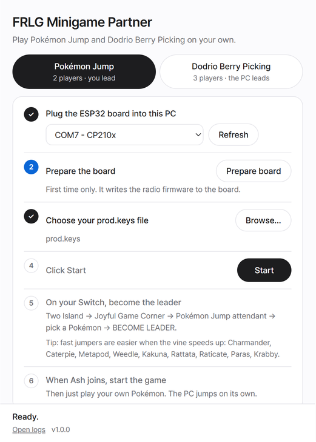

Free and open source (AGPL-3.0). No save editing: you play your own Pokémon.

What you need
A Windows PC
A classic ESP32 board (e.g. ESP32-DevKitC) and a USB cable
Your Switch's key file (prod.keys). It isn't included.
An official copy of FireRed or LeafGreen for Switch
One star, two records
The star needs at least 200 jumps in a row in Pokémon Jump and at least 200 berries in one game of Dodrio Berry Picking. Both are local wireless multiplayer minigames. Here the PC fills the other player slots.
Pokémon Jump
2 players · you lead, the PC joins
Become the leader on your Switch; the PC joins as Ash.
It didn't miss up to 9999 jumps in testing, and up to 205 on real hardware.
Dodrio Berry Picking
3 players · the PC leads, you join
The PC opens a group; join it from your Switch.
It never takes a berry you can pick.
How it works
Two Island → Joyful Game Corner.
Download and runFRLG-Minigame-Partner.exe. If "Windows protected your PC" appears, click More info → Run anyway.
Plug in the board and click Prepare board once. It writes the radio firmware.
Choose your prod.keys. The program checks it before every run.
Click Start, then on your Switch become the leader (Pokémon Jump) or join Ash's group (Dodrio Berry Picking).
FAQ
How do I get the minigame star on my Trainer Card?
Set both records: at least 200 jumps in a row in Pokémon Jump and at least 200 berries in one game of Dodrio Berry Picking. Together, these records earn one Trainer Card star.
Can I play Pokémon Jump or Dodrio Berry Picking solo on Switch?
Yes. You need one Switch, one Windows PC and a USB-connected ESP32 board. The PC fills the other player slots as Ash. You still play your own Pokémon.
Does it edit my save?
No. Your save is never edited; the game itself saves your records.
Need help?
Something broken, an idea, or a question — tell us on GitHub, or by email.